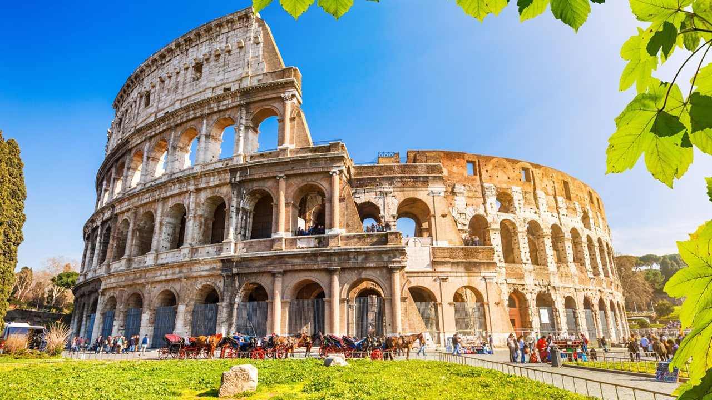

*Les recordamos que debido a la contingencia del COVID-19 o Coronavirus algunos lugares aún se encuentran cerrados o con visitas gradualmente.
Conoce las plazas, las fuentes, los monumentos más importantes que ver en Roma.Toda la ciudad de Roma es un museo al aire libre y estos son los Top 5 de los lugares mas visitados:
Coliseo Romano
El anfiteatro, declarado Patrimonio de la Humanidad por la Unesco y elegida también como una de las siete maravillas del mundo moderno, llegó a acoger a más de 50.000 espectadores para presenciar luchas de animales y de gladiadores, representaciones teatrales e incluso, en alguna ocasión, batallas navales, conocidas como naumaquias.
Foro Romano
El Foro Romano, era el foco de la ciudad de Roma, es decir, la zona central, semejante a las plazas centrales en las ciudades actuales, donde se encuentran las instituciones de gobierno, mercado y religión.
Capilla Sixtina
La Capilla Sixtina es una capilla del Palacio Apostólico de la Ciudad del Vaticano, la residencia oficial del papa. Se trata de la estancia más conocida del conjunto palaciego.La fama de la Capilla Sixtina se debe principalmente a su decoración al fresco, y especialmente a la bóveda y el testero, con El Juicio Final, ambas obras de Miguel Ángel.
Panteón de Agripa
El templo dedicado a los dioses celestes de la mitología romana sigue siendo un alarde de pericia técnica casi dos mil años después de su construcción. Sus formas y decoración responden a intrincados símbolos matemáticos y religiosos que ponen de manifiesto la complejidad del pensamiento simbólico de los romanos.
Fontana Di Trevi
La Fontana de Trevi es la fuente más bonita de Roma. Con unas dimensiones de 20 metros de anchura por 26 metros de altura, la Fontana de Trevi es también la fuente más grande de la ciudad.
¿Por qué siempre hay gente en la Fontana lanzando monedas al agua y haciéndose fotos?
El mito, es nacido con la película "Tres monedas en la fuente" en 1954, y dice lo siguiente:
| Lugar | Precio | Horario | Dirección |
|---|---|---|---|
| 1. Coliseo Romano | 12 € | 08:30 a.m 19:15 p.m | Piazza del Colosseo, 1, 00184 Roma RM |
| 2. Foro Romano | 12 € | 08:30 a.m 19:00 p.m | Via della Salara Vecchia, 5/6, 00186 Roma RM |
| 3. Capilla Sixtina | 17 € | 09:00 a.m 14:00 p.m | 00120 Cdad. del Vaticano, Ciudad del Vaticano |
| 4. Panteón de Agripa | Gratuita | 09:00 a.m 18:15 p.m | Piazza della Rotonda, 00186 Roma RM |
| 5. Fontana Di Trevi | Gratuita | Sin Horario | Piazza di Trevi, 00187 Roma RM |